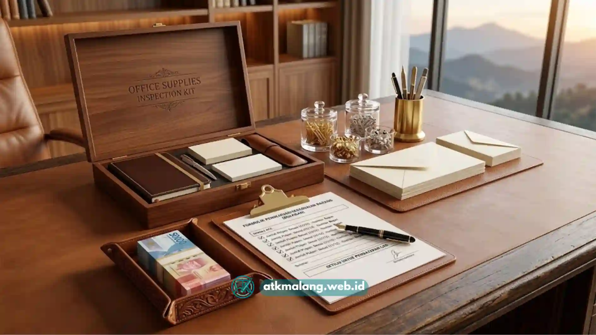

Kebutuhan Alat Tulis Kantor yang mendesak sering kali muncul di saat yang paling tidak terduga.
Sekolah kehabisan spidol whiteboard menjelang ujian, koperasi sekolah kehabisan buku tulis, atau kantor kehabisan kertas HVS di tengah deadline laporan bulanan.
Dalam situasi seperti ini, proses birokrasi transfer bank yang berlapis justru menjadi hambatan dan membuang waktu penting Anda.
Sehingga kebutuhan riil bergeser ke satu hal, mencari supplier atk malang lokal yang mampu mengirim barang cepat dengan sistem Cash on Delivery (COD) atau pembayaran di tempat setelah barang diperiksa.
Daftar Isi
Cara Menilai Kredibilitas Supplier ATK COD Malang
Menemukan supplier atk malang dengan sistem COD tepercaya dapat dilakukan dengan memprioritaskan distributor lokal yang memiliki badan hukum resmi.
Mereka idealnya memiliki layanan kurir internal yang menjamin pengantaran pada hari yang sama serta memberikan garansi retur instan di tempat jika barang cacat.
Selain itu, carilah kemudahan fleksibilitas pembayaran baik secara tunai maupun transfer saat serah terima barang Alat Tulis Kantor.
ATK Malang (atkmalang.web.id) menawarkan layanan pengiriman COD cepat dan gratis ongkir di seluruh Malang Raya, mencakup Kota Malang, Kabupaten Malang, dan Kota Batu.
Sehingga kebutuhan mendesak akan Alat Tulis Kantor dapat terpenuhi tepat waktu tanpa terhambat administrasi transfer bank.
Keunggulan Sistem COD dalam Pengadaan ATK Mendesak
Dari sudut pandang logistik pengadaan, sistem COD memiliki sejumlah keunggulan praktis dalam transaksi pengadaan Alat Tulis Kantor.
Keunggulan ini sering kali jarang disadari oleh sekolah maupun kantor sebelum mereka benar-benar mengalami kondisi darurat krisis stok ATK.
Mencegah Kesalahan Spesifikasi Barang
Pembelian jarak jauh melalui mekanisme transfer di muka sering kali berujung pada kekecewaan karena barang yang datang tidak sesuai spesifikasi.
Misalnya salah ukuran binder clip, tipe spidol whiteboard yang berbeda, atau jenis kertas HVS yang tidak kompatibel dari yang dipesan.
Sistem COD memungkinkan penerima barang memeriksa kesesuaian jenis, ukuran, dan jumlah Alat Tulis Kantor secara langsung di hadapan kurir sebelum dana dibayarkan.
Sehingga risiko kesalahan spesifikasi tersebut dapat langsung diselesaikan di tempat tanpa perlu menjalani proses retur barang yang berbelit-belit.

Pengecekan kualitas bersama kurir mengamankan investasi Alat Tulis Kantor perusahaan Anda.Menjaga Keamanan Anggaran Koperasi Sekolah
Koperasi sekolah atau instansi pendidikan umumnya mengelola dana kas kecil dengan mekanisme pertanggungjawaban yang ketat dan transparan untuk kebutuhan Alat Tulis Kantor.
Sistem pembayaran di muka melalui transfer bank justru menambah risiko dana tertahan apabila barang ternyata datang terlambat atau sama sekali tidak sesuai pesanan.
COD memberikan kepastian jaminan bahwa dana hanya dikeluarkan kasir setelah barang benar-benar diterima dan diperiksa secara menyeluruh.
Sehingga sistem COD ini sangat dinilai lebih aman dan sesuai dengan pola pengelolaan dana kas kecil di lingkungan sekolah.
SOP Pengetesan Kualitas Produk Saat Serah Terima
Kurir internal profesional dari ATK Malang menerapkan SOP pengecekan bersama penerima barang sebelum transaksi COD Alat Tulis Kantor dinyatakan selesai sepenuhnya.
Prosedur pengecekan ini secara mendetail mencakup perhitungan jumlah item sesuai nota pesanan, kondisi fisik kemasan luar, serta kesesuaian spesifikasi.
Prosedur terstruktur ini memastikan barang Alat Tulis Kantor yang diterima telah benar-benar sesuai standar mutu dan kebutuhan pengguna.
Pengecekan di tempat ini sekaligus mempercepat proses mediasi atau pengembalian sekiranya ditemukan produk yang cacat atau kurang sesuai.
Perbandingan Metode Pembayaran Pengadaan ATK
Berikut matriks perbandingan tiga metode pembayaran yang umum digunakan dalam pengadaan Alat Tulis Kantor di Malang.
Gunakan matriks ini sebagai bahan evaluasi dan pertimbangan tim internal sebelum menentukan skema transaksi mana yang paling efektif.
| Parameter Evaluasi | Transfer Bank di Muka | Layanan COD (Bayar di Tempat) | Sistem Tempo / Termin B2B |
|---|---|---|---|
| Tingkat Keamanan Dana | Rawan jika barang tidak sesuai/terlambat | Aman, dana keluar setelah barang diperiksa | Aman, namun bergantung kepercayaan kontrak |
| Kecepatan Proses Kirim | Menunggu verifikasi transfer terlebih dahulu | Cepat, bisa hari yang sama untuk area Malang Raya | Menyesuaikan jadwal kontrak berkala |
| Kelayakan Audit Keuangan | Baik, ada bukti transfer resmi | Baik, dilengkapi kwitansi/invoice serah terima | Sangat baik, tercatat dalam kontrak & faktur berkala |
| Syarat Minimum Transaksi | Umumnya tanpa minimum | Minimum order tertentu sesuai kebijakan area | Umumnya untuk transaksi volume besar/berkelanjutan |
Pemilihan metode pembayaran pembelian Alat Tulis Kantor idealnya disesuaikan kembali dengan tingkat urgensi kebutuhan dan mekanisme pertanggungjawaban keuangan masing-masing institusi.
Sebaiknya tim pengadaan tidak bertindak semata-mata mengandalkan rutinitas dan kebiasaan lama transaksi dari vendor sebelumnya yang kurang fleksibel.
Kriteria Tambahan Memilih Distributor ATK Malang
Selain menilai sistem pembayaran, penilaian Anda terhadap distributor atk malang sebaiknya mencakup poin kritis lainnya seperti tingkat kelengkapan stok varian produk.
Konsistensi penawaran harga kompetitif, serta kemudahan dan kecepatan layanan komunikasi tim sales saat instansi mengalami kendala teknis pemesanan.
Toko atk malang terdekat yang komunikatif dan sigap menjawab setiap detail pertanyaan spesifikasi Alat Tulis Kantor sebelum pengiriman dilakukan jelas lebih dapat diandalkan.
Mereka ini memberikan perlindungan bagi konsumen dan jauh lebih baik dibanding penyedia yang hanya fokus mendongkrak volume penjualan semata.
COD sebagai Solusi Pengadaan Mendesak
Penyediaan suplai cadangan Alat Tulis Kantor yang bersifat urgen atau mendesak tidak sepatutnya ikut terhambat oleh lambatnya proses birokrasi perbankan internal.
Pemanfaatan fasilitas layanan sistem COD dari supplier atk malang yang telah memiliki legalitas jelas dan armada kurir operasional sendiri ini terbukti sangat menguntungkan.
Sistem ini memberikan satu solusi pengadaan praktis bagi sekolah dan kantor yang mendambakan kepastian kontrol kualitas fisik barang secara utuh sekaligus jaminan ketepatan waktu pengiriman.